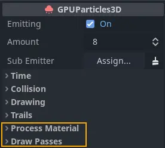
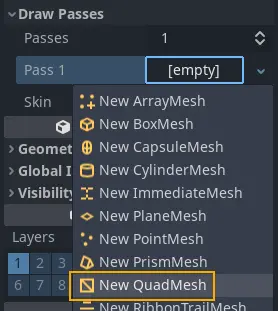
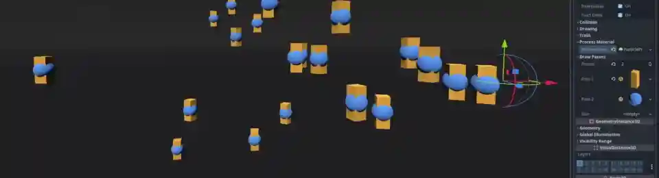

Creating a 3D particle system

Required particle node properties
To get started with particles, the first thing we need to do is add a GPUParticles3D
node to the scene. Before we can actually see any particles, we have to set up two parameters on the node:
the Process Material and at least one Draw Pass.
The process material
To add a process material to your particles node, go to Process Material in the inspector panel.
Click on the box next to Process Material and from the dropdown menu select New ParticleProcessMaterial.

Creating a process material
ParticleProcessMaterial is a special kind of material. We don't use it to draw any objects. We use it to update particle data and behavior on the GPU instead of the CPU, which comes with a massive performance boost. A click on the newly added material displays a long list of properties that you can set to control each particle's behavior.
Draw passes

At least one draw pass is required
In order to render any particles, at least one draw pass needs to be defined. To do that, go to
Draw Passes in the inspector panel. Click on the box next to Pass 1 and select New QuadMesh
from the dropdown menu. After that, click on the mesh and set its Size to 0.1 for both x
and y. Reducing the mesh's size makes it a little easier to tell the individual particle
meshes apart at this stage.
You can use up to 4 draw passes per particle system. Each pass can render a different mesh with its own unique material. All draw passes use the data that is computed by the process material, which is an efficient method for composing complex effects: Compute particle behavior once and feed it to multiple render passes.

Using multiple draw passes: yellow rectangles (pass1) and blue spheres (pass 2)
If you followed the steps above, your particle system should now be emitting particles in a waterfall-like fashion, making them move downwards and disappear after a few seconds. This is the foundation for all particle effects. Take a look at the documentation for particle and particle material properties to learn how to make particle effects more interesting.

Particle conversion

Turning GPU into CPU particles
You can convert GPU particles to CPU particles at any time using the entry in the viewport menu. When you do so, keep in mind that not every feature of GPU particles is available for CPU particles, so the resulting particle system will look and behave differently from the original.
You can also convert CPU particles to GPU particles if you no longer need to use CPU particles. This is also done from the viewport menu.
Some of the most notable features that are lost during the conversion include:
multiple draw passes
turbulence
sub-emitters
trails
attractors
collision
You also lose the following properties:
Amount RatioInterp to EndDamping as FrictionEmission Shape OffsetEmission Shape ScaleInherit Velocity RatioVelocity PivotDirectional VelocityRadial VelocityVelocity LimitScale Over Velocity
Converting GPU particles to CPU particles can become necessary when you want to release a game on older devices that don't support modern graphics APIs.